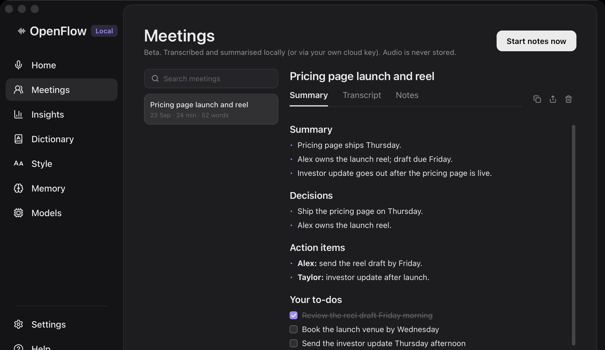
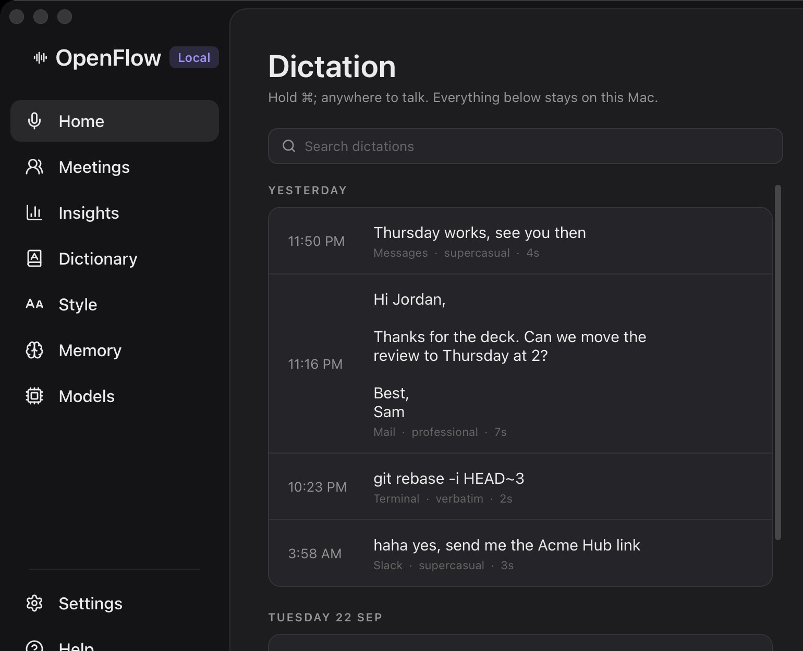

Say it how you say it.
It lands how you meant it.
Fillers disappear, self-corrections resolve, and spoken commands turn into formatting. Each key shows what you say on top and what gets typed on the front.
- “um, so, uh…”gone
- “Tuesday, no wait, Thursday”Thursday
- “new line”↵
- “bullet point milk”- milk
- “sam at acme dot com”sam@acme.com
- “twenty dollars”$20
- “zen tro”Zentro, from your dictionary
- “fire emoji”🔥
- “…actually scratch that”sentence deleted
- “three things: …”1. 2. 3.
- Hold, or quick-taptap starts, tap stops · Esc cancels
One chord. The right voice in every app.
Messages gets a text. Mail gets an email. Your terminal gets exactly what you said. Tones are plain-language instructions you can edit, and ⌘⇧; switches to each app's alternate.
You said“hey jordan um thanks for the deck can we move the review to thursday”
hey Jordan thanks for the deck can we move the review to thursday?
Illustrative output for the default tones.
Your Mac is the server.
Speech recognition and cleanup run on your Mac. No account, no audio uploaded, and it keeps working on a plane. Cloud models are opt-in, use your own key, and fall back to local if anything fails.
- Mic16 kHz, on-device
- Parakeetspeech → text · ~70 ms per 4 s clip
- Rulesfillers, commands · 0.6 ms
- Qwen3.5tone and grammar · llama.cpp
- ⌘Vpasted at your cursor
- Cloudoff unless you turn it on
Timings measured on an Apple Silicon Mac: transcription of a 3.8 s clip with Parakeet v2, and the rule pass on a 60-word dictation. Words also appear while you talk, so the transcript is ready the moment you let go.
Meeting notes, no bot in the call.
When Zoom, Meet, Teams or FaceTime starts using your mic, OpenFlow offers to take notes. It never starts on its own. You and the other side are transcribed separately, and when the call ends you get a summary, the decisions, the action items and your own to-dos.
- Audio is never stored. Only the transcript is kept.
- 50+ languages on the far side, auto-detected.
- Search every meeting. Export as Markdown.

It learns how you write.
Add names and jargon to your dictionary and they get boosted inside the speech model itself. Tell it who you are once. When you fix a dictation, that correction becomes an example of your style.

Open source. Measured on your own voice.
Every rule, prompt and model is in the repo, and you can swap any of them. Before and after a change, --eval replays the dictations you corrected and reports word error rate, so you know whether the change helped.
- BSD 3-Clause.
- Rust, React and Tauri, with a small Swift helper for Apple's speech hardware.
- 110 rule self-tests pass before every build.
# build it yourself
$ brew install llama.cpp
$ pnpm install
$ ./scripts/build.sh --install
# rule checks, no models needed
$ OpenFlow --selftest
selftest: 110 passed, 0 failed
# replay your corrected dictations
$ OpenFlow --evalWhat you need
- A Mac
- macOS 15 or later, Apple Silicon.
- llama.cpp
brew install llama.cppfor cleanup. Without it, text is pasted verbatim.- Models
- Downloaded once from inside the app: speech about 600 MB, cleanup 1.3–5.7 GB depending on size.
- Windows and Linux
- In progress. The platform layer is built for them, and they aren't released yet.